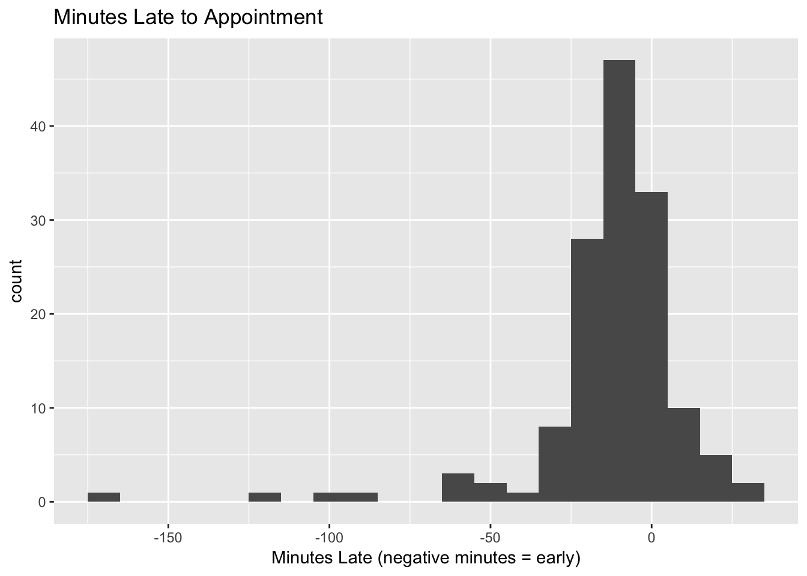
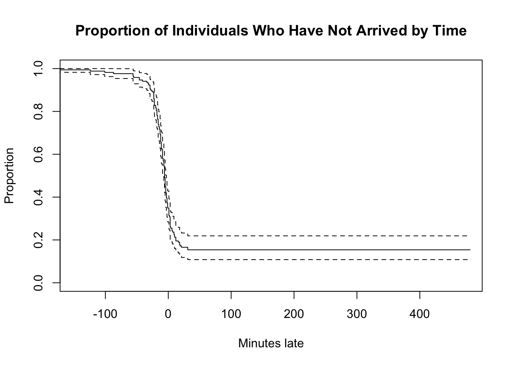
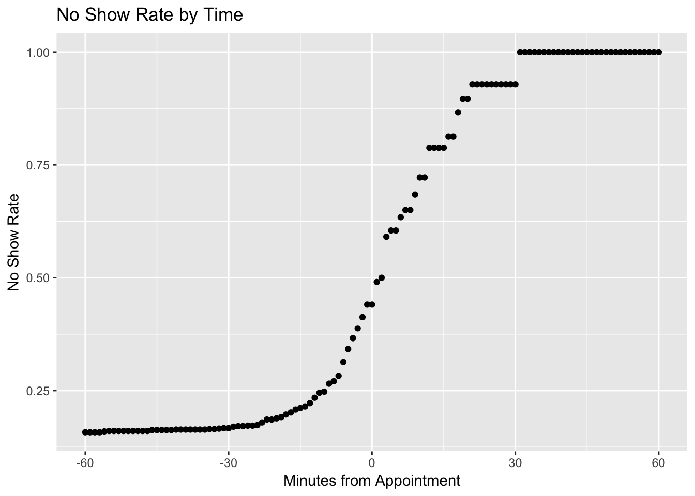

When a patient doesn’t come to their developmental behavioral pediatrics appointment, it’s bad for my employer, but it’s an unexpected boon for me. Most of my patients seem to come early and only a few arrive later than 5-10 minutes past their appointment time. I wanted to know when I could start to give up on them and start doing something else. When would it be likely that a patient will no-show? For example, if a given amount of time would have passed since the appointment time, what would be the probability that the patient would still show up? I set out to investigate this with a couple of months of data from my appointments.
Methods
This was a cross sectional study of all appointments to see me between May through July 2016. I collected the time and date of the appointment, the actual arrival time, whether the appointment was kept or not, and the appointment type (consult or follow-up). I calculated the difference between the appointment time and arrival time to determine how many minutes early or late patients showed up. If patients did not arrive by 5 pm, I set them as a no-show.
I calculated means and medians of continuous data and percentages of categorical data. I generated various plots including a survival curve for illustration. Fisher exact test was used to determine if there were differences in no show rates by appointment type. I used the R version 3.4.0 (2017-04-21) and the dplyr, survival, and ggplot2 package for this analysis
Results
The following is the code and results of the data analysis.
Loading and Data Munging
First, I loaded the libraries and a helper function.
library(dplyr)##
## Attaching package: 'dplyr'## The following objects are masked from 'package:stats':
##
## filter, lag## The following objects are masked from 'package:base':
##
## intersect, setdiff, setequal, unionlibrary(survival)
library(ggplot2)
proportion <- function(x) {
tmp <- table(x)
paste0(tmp[1],
" (",
round(100*prop.table(tmp)[1], 1),
"%, 95% confidence interval ",
round(prop.test(tmp)$conf.int[1]*100, 1),
"-",
round(prop.test(tmp)$conf.int[2]*100, 1),
"%)"
)
}I loaded the data.
x <- read.csv("../datasets/lateness.csv", colClasses = "character")
x <- tbl_df(x)Here are the first 10 rows of the dataset.
x## # A tibble: 169 × 8
## Date Appointment_time Arrival_time Outcome Appointment_type Clinic
## <chr> <chr> <chr> <chr> <chr> <chr>
## 1 5/2/2016 9:00 8:38 kept consult MAP
## 2 5/2/2016 10:30 10:27 kept consult MAP
## 3 5/2/2016 13:00 12:55 kept consult MAP
## 4 5/2/2016 14:30 14:18 kept consult MAP
## 5 5/3/2016 8:30 8:51 kept consult MLW
## 6 5/3/2016 10:00 10:06 kept consult MLW
## 7 5/3/2016 13:00 12:56 kept consult MLW
## 8 5/3/2016 14:30 14:24 kept consult MLW
## 9 5/4/2016 9:00 8:55 kept consult MAP
## 10 5/4/2016 10:30 17:00 noshow consult MAP
## # ... with 159 more rows, and 2 more variables: Early <chr>,
## # Minutes_difference <chr>I formatted some of the character data into factors for later use.
x$Outcome <- factor(x$Outcome)
x$Appointment_type <- factor(x$Appointment_type)
x$Clinic <- factor(x$Clinic)R works with times in POSIX formats that specify both date and time. In this step, I combined both date and time to create POSIX compatible variables describing appointment time and arrival time.
x <- x%>% mutate(appointment_dt = paste(Date, Appointment_time),
arrival_dt = paste(Date, Arrival_time))
x$appointment_dt <- as.POSIXct(x$appointment_dt, tz = "HST", format = "%m/%d/%Y %H:%M")
x$arrival_dt <- as.POSIXct(x$arrival_dt, tz = "HST", format = "%m/%d/%Y %H:%M")I was then able to create a variable for the difference between the appointment and arrival times.
x <- x %>% mutate(minutes_late = difftime(arrival_dt, appointment_dt, units = "mins"))When you subtract two times from each other, R treats the result as a difftime class object with limited ability to do further calculations. I coerced this into a numeric variable to permit further calculations.
x$minutes_late <- as.numeric(x$minutes_late)Appointment Type and No Show Rate
I had 169 appointments in the study period. Of tese, 133 (78.7%, 95% confidence interval 71.6-84.5%) were consults.
table(x$Appointment_type)##
## consult followup
## 133 36Of all appointment types, 143 (84.6%, 95% confidence interval 78.1-89.5%) arrived to their appointments. The no-show rate was 15.4%, 95% CI 10.5-21.9%.
table(x$Outcome)##
## kept noshow
## 143 26I looked at the comparison of appointment types and no-shows. There was no statistically significant difference between no-shows by appointment type (Fisher exact test, p = 0.8)
table(x$Appointment_type, x$Outcome)##
## kept noshow
## consult 113 20
## followup 30 6Minutes Late to Appointment
The distribution of the minutes late to the appointment is shown below. Negative minutes late correspond to patients who showed up early, while positive minutes late are the number of minutes past the appointment time that the patients arrived. I only looked at patients who actually came to their appointments for this figure.
kept_appts <- x %>% filter(Outcome == "kept")
ggplot(kept_appts, aes(minutes_late)) + geom_histogram(binwidth = 10) +
ggtitle("Minutes Late to Appointment") +
xlab("Minutes Late (negative minutes = early)")
A few patients arrived over an hour early for various reasons including travel from a neighbor island, miscommunication about appointment times, etc. Despite these rare outliers, the appointments appear to be normally distributed.
I calculated summary statistics and relevant quantiles. Because of the outliers, the quantiles are a better reflection of the distribution.
summary(kept_appts$minutes_late)## Min. 1st Qu. Median Mean 3rd Qu. Max.
## -172.00 -18.00 -8.00 -12.17 -1.00 31.00quantile(kept_appts$minutes_late, probs = c(0.05, 0.1, 0.25, 0.5, 0.75, 0.9, 0.95))## 5% 10% 25% 50% 75% 90% 95%
## -46.0 -29.0 -18.0 -8.0 -1.0 6.8 12.0Based on these results, the median check in time was -8 minutes compared to the appointment time. The 90th percentile for check-in time was 6.8 minutes late.
Another way of looking at this is that 50% of patients will arrive between 1 and 18 minutes before their appointment. Fully 90% of patients will arrive between 46 minutes before and 12 minutes after their appointment time.
Appointment Time: the Early Patients
I set up a new variable for whether a patient was early to help with describing these patients.
x <- x %>% mutate(Early = minutes_late <= 0)As noted above in the summary statistics, most patients were early. Out of the 169 patients, 110 (65.1%, 95% confidence interval 57.3-72.1%) arrived at or before their appointment time. There was no significant difference by appointment type (Fisher exact test, p = 0.17).
table(early = x$Early, Appointment_type = x$Appointment_type)## Appointment_type
## early consult followup
## FALSE 50 9
## TRUE 83 27Survival Curve
I created a censoring variable to help with the survival analysis.
x <- x %>% mutate(kept = ifelse(Outcome == "kept", T, F))Here’s the survival curve.
model_simple <- survfit(Surv(x$minutes_late, event = x$kept, type = "right")~1)
plot(model_simple, xlab = "Minutes late", ylab = "Proportion",
main = "Proportion of Individuals Who Have Not Arrived by Time")
No Show Rate by Time
The other way to look at this is the no show rate by time. That is, how does the no show rate go up with time? I wrote a helper function here to determine the empirical no show rate at a given time.
no_show_rate <- function(t, dat = x) {
dat <- tbl_df(dat)
timedat <- dat %>% filter(dat$minutes_late > t)
if(nrow(timedat) == 0) {
return("No data after this time")
}
else {
return(list(time = t,
no_show_rate = sum(!timedat$kept)/length(timedat$kept),
lower_ci = prop.test(sum(timedat$kept), length(timedat$kept))$conf.int[1],
higher_ci = prop.test(sum(timedat$kept), length(timedat$kept))$conf.int[2]
))
}
}This function allowed me to empirically estimate the no show rate across time. For example, the no show rate at time 0 (appointment time) was calculated below.
no_show_rate(0)## $time
## [1] 0
##
## $no_show_rate
## [1] 0.440678
##
## $lower_ci
## [1] 0.424719
##
## $higher_ci
## [1] 0.6862024I plotted the no show rate by time in the following figure.
timespan <- -60:60
nsr <- data.frame(t = timespan, noshowrate = unlist(sapply(timespan, no_show_rate)[2,]))
nsr <- tbl_df(nsr)
ggplot(nsr, aes(x = t, y = noshowrate)) + geom_point() +
ggtitle("No Show Rate by Time") + xlab("Minutes from Appointment") +
ylab("No Show Rate")
Discussion
As I initially suspected, patients are usually early to my appointments, with the median arrival being 8 before their appointment time. By the time the appointment time had passed, only about half were likely to show up, about the same as flipping a coin. However, it was still possible for patients to show up late, and at 18 minutes, about 1 in 6 of those who had not come yet would still show up.
One limitations of these data are that that my specialty is fairly unique. There may be a lower no show rate and a higher propensity to show up early given the level of concern of the family about their child’s developmental or behavioral condition. My no show rate is in line with that of previously published data in my specialty.
Another limitation is that the sample size was small to look at subgroups who may be more likely to be late. If we were able to predict those who are more likely to be late, we might be able to intervene to reduce our risk of no-show.
Conclusion
The reason I embarked on this project was to determine when I could relax and start something that takes more than a few minutes to do while waiting for a patient. Based on the data, I feel comfortable saying that if a patient is late by 10 minutes, there is only about a 25% probability that they will show up. Or out of every 4 times I start working on something, I’ll be interrupted only once. That feels about right for my comfort level!